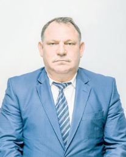

| 2019 |
Первый собственник
 Невмержицкий Сергей Петрович (родился в 1964 году в п. Слобода Лельчицкого района Гомельской области). С 2014 г. заместитель председателя Минского областного исполнительного комитета. Курирует вопросы строительного и дорожного комплекса, связи и информатизации, транспорта и коммуникаций, придорожного сервиса, жилищного и коммунального хозяйства, топливного и энергетического комплекса области, чрезвычайных ситуаций, осуществляет координацию деятельности по вопросам сбора, переработки и утилизации вторичного сырья. |